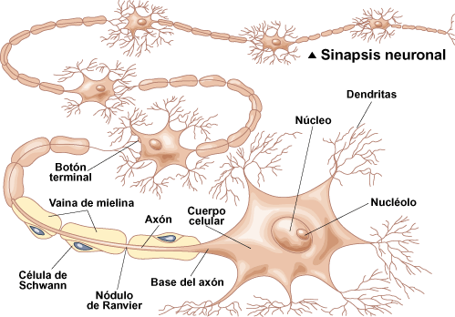
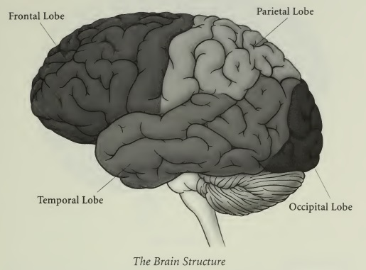
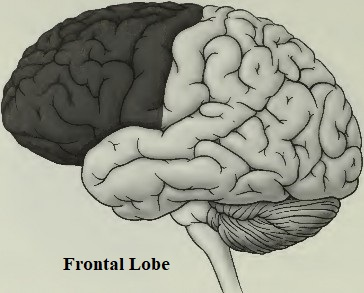
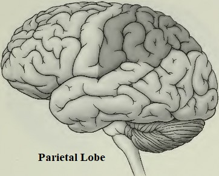
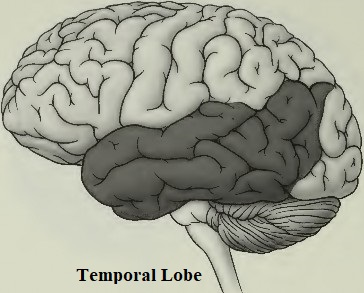
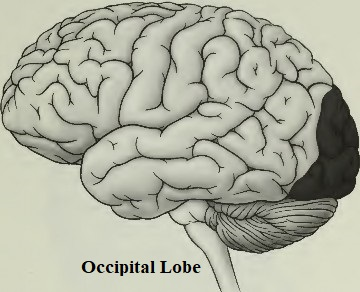
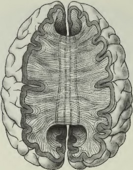
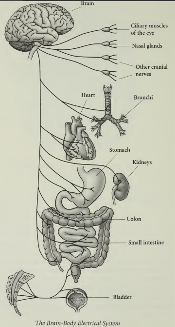

CONOCE TU CEREBRO
COMPRENDIENDO EL EFECTO DE BORDE
Si hay un órgano que diferencia a los humanos del resto del mundo natural, ese es el cerebro. No hace mucho, se creía que la inteligencia dependía del tamaño del cerebro. Se decía que los elefantes, gracias a sus cerebros de cuatro kilos y medio, eran tan inteligentes que "nunca olvidaban". En cambio, se creía que las aves eran menos evolucionadas debido a sus diminutos cerebros (y todavía menospreciamos a algunos llamándolas "cerebros de pájaro"). Ahora sabemos que los humanos tenemos, con diferencia, el cerebro más dinámico y evolucionado, a pesar de que pesa tan solo un kilo y medio. Claramente, el tamaño no importa.
También se puede decir que la función cerebral sigue siendo la cualidad más distintiva del ser humano. Casi todos los demás órganos del cuerpo humano son reemplazables y reparables, y a menudo los animales poseen versiones mejoradas de ellos. Sin embargo, solo en los humanos el cerebro es superior, lo cual constituye una razón más para aprovechar el Efecto Edge y dominar la clave para la salud de nuestro cuerpo y mente.
Para comprender verdaderamente cómo funciona nuestro cuerpo y cómo mejorar nuestras capacidades, debemos comenzar por comprender cómo funciona el cerebro. Les acompaño en este repaso de los fundamentos de la función cerebral. El camino hacia el bienestar comienza con los genes más pequeños, que le indican al cerebro que cree reacciones químicas que generan electricidad que viaja por toda la anatomía. En definitiva, la química cerebral influye en los cuatro aspectos principales de la salud: memoria, atención, temperamento y personalidad, y bienestar físico.

DE LOS GENES A LA ELECTRICIDAD: DESCODIFICANDO EL CEREBRO
Aunque los humanos solemos enfatizar nuestras diferencias, biológicamente somos iguales. La prueba está en nuestro ADN: la secuencia del genoma humano es más del 99,9 % igual en todas las personas. Sin embargo, esa diferencia del 0,1 % es suficiente para que algunos estemos sanos y otros enfermos, algunos altos y otros bajos, algunos ingeniosos y otros aburridos.
Si bien el ADN codifica nuestros comportamientos y funciones físicas, no es la esencia de lo que nos hace únicos. Nuestro ADN es tan bueno como el sistema de transporte que crea para transmitir información. Ese sistema depende de la electricidad. Así como necesitamos una batería para arrancar un coche, el cuerpo humano depende de la electricidad para mantenerse vivo. Es la chispa de la vida, que energiza el cuerpo y crea nuestra consciencia.
DEFINIENDO EL EFECTO DE BORDE
Piensa en tu cerebro como una interfaz con tu cuerpo, de forma similar a como funciona un enchufe eléctrico dentro de la pared de tu casa. Cuando quieres encender una luz, enchufas una lámpara y la electricidad se transfiere del circuito de la casa a la lámpara. De igual manera, el cerebro envía una corriente eléctrica por todo tu cuerpo, alimentando tus sistemas internos, manteniendo tu personalidad y cuidando tu salud.
La conexión entre el enchufe y la toma de corriente, o entre el cerebro y el cuerpo, es un aspecto de lo que llamo el borde: es el punto exacto donde el cerebro y el cuerpo se unen. Cuando nuestro borde falla, nosotros también. Cuando funciona, funcionamos en armonía. Al dominar el Efecto Borde, puedes controlar las señales del cerebro al resto del cuerpo mediante cambios en la química cerebral, interviniendo precisamente donde se transfiere la información cerebral, lo que te permite controlar la enfermedad ahora y crear una salud plena en el futuro.
LA VENTAJA ELÉCTRICA
El cerebro es el mayor generador de electricidad del cuerpo. Utilizamos cuatro medidas para determinar la relación entre la función cerebral y la generación y distribución de electricidad humana al resto del cuerpo: voltaje, velocidad, ritmo y sincronía.
VOLTAJE
El voltaje mide la potencia, o la intensidad con la que el cerebro responde a un estímulo, lo que a su vez afecta su capacidad para procesar esa información. Esta información puede ser tanto cognitiva como física. Por ejemplo, el voltaje determina el metabolismo y los diversos estados de conciencia, desde la alerta plena hasta el sueño profundo. Sin un voltaje adecuado, se pierde velocidad y se pierde el interés en las acciones y la personalidad.
VELOCIDAD
La electricidad del cerebro circula por el cuerpo a sesenta ciclos o pulsaciones por segundo. El pensamiento se produce a dos o tres pulsaciones por segundo. La velocidad del cerebro se basa en la rapidez con la que se procesan estas señales eléctricas. Esta velocidad determina la edad real o funcional del cerebro, que puede ser muy diferente de la edad cronológica. Al aumentar la velocidad cerebral, se puede mejorar la memoria, la atención, el coeficiente intelectual e incluso el comportamiento. Cuando la velocidad cerebral disminuye, se puede perder la memoria y sentir que se está perdiendo la capacidad de pensar.
RITMO
Un cerebro equilibrado crea y recibe electricidad con un flujo fluido y uniforme. Por el contrario, cuando la electricidad se genera en ráfagas, se denomina arritmia y señala el inicio de una disfunción cerebral. El ritmo determina cómo gestionas el estrés de la vida. Cuando tu ritmo no es el adecuado, puedes sentirte nervioso, lo que puede provocar ansiedad, nerviosismo o irritabilidad.
SINCRONÍA
La electricidad en el cerebro se puede ver en forma de ondas cerebrales. Hay cuatro tipos de ondas cerebrales, cada una de las cuales nos proporciona un nivel de conciencia física y mental. El primer tipo se llama beta, que viaja a una velocidad de doce a dieciséis ciclos o pulsos por segundo. Cuando el cerebro transmite ondas beta, te sientes alerta. El segundo tipo se llama alfa y viaja a una velocidad de ocho a doce ciclos o latidos por segundo. Cuando el cerebro transmite ondas alfa, te sientes creativo. El siguiente tipo, las ondas theta , viaja a una velocidad de cuatro a ocho ciclos o latidos por segundo. Cuando el cerebro transmite ondas theta, comienzas a sentir somnolencia. Por último, están las ondas delta , que viajan a una velocidad de uno a cuatro latidos por segundo. Cuando el cerebro transmite un predominio de ondas delta, estás en algún nivel de sueño.
Sea cual sea tu estado de consciencia, estas cuatro ondas cerebrales siempre aparecen en combinación. La sincronía ocurre cuando las cuatro ondas cerebrales se equilibran a lo largo del día. Por la noche, nuestro cerebro se recupera de los traumas del día sincronizando la salida de las cuatro ondas cerebrales. Si estas ondas cerebrales están desincronizadas, podrías sentirte como si estuvieras al límite: no duermes bien, tu mente divaga y tu personalidad está fuera de control.
TODO COMIENZA CON UNA NEURONA
El cerebro puede coordinar tus movimientos, controlar tu respiración y permitirte sentir hambre, dolor, tristeza y felicidad mediante las cargas eléctricas que hemos estado comentando. Sin embargo, esta electricidad se usa menos sin el camino por el que viaja. Tu actividad cerebral comienza con un estímulo: un pensamiento o una entrada de cualquiera de los cinco sentidos.
Cuando La información de este pensamiento o de tus nervios sensoriales llega a tu cerebro, tu cerebro envía mensajes propios al cuerpo. Todas las señales que van hacia y desde tu cerebro viajan a través de tu médula espinal. Juntos, el cerebro y la médula espinal conforman el sistema nervioso central. Los componentes más pequeños del sistema nervioso son células especiales llamadas neuronas. Cada uno de nosotros nace con cien mil millones de neuronas y continuamos produciéndolas a lo largo de nuestras vidas. Cada neurona tiene un núcleo, que contiene el material genético de la célula; dendritas, las extensiones ramificadas de la célula que reciben mensajes; y el axón, una larga extensión que lleva los impulsos nerviosos fuera del cuerpo de la célula. Cada neurona asume una tarea específica, sin embargo, cada neurona transmite información en forma de corriente eléctrica.

Cada neurona tiene miles de dendritas que se conectan a otras neuronas para crear la red eléctrica de tu cuerpo. Las neuronas se acercan mucho unas a otras, pero no se tocan. El espacio entre ellas se llama brecha sináptica. Cada uno de nosotros tiene más de cien billones de estas brechas entre neuronas, o sinapsis. El axón de una neurona utiliza neuroquímicos para cruzar esta sinapsis y conectarse con la dendrita de otra neurona. Esta conexión es parte del circuito del cerebro, permitiendo que la electricidad pase continuamente a través de las neuronas.
El flujo de electricidad es proporcionado por los bioquímicos del cerebro que se mueven a través de las sinapsis a varios sitios receptores. Estos receptores son como los dedos de un guante, cada uno encaja solo en una parte de la mano. A medida que piezas específicas de estos bioquímicos se encajan en su lugar, el cerebro dirige cómo funcionan el cuerpo y la mente. Los bioquímicos del cerebro transfieren electricidad, que luego envía energía e información al resto del cuerpo.
BIOQUÍMICOS:
EL SERVICIO DE ENTREGA DEL CEREBRO
El cerebro y el cuerpo funcionan óptimamente cuando cada neurona está correctamente programada para producir, enviar y recibir una sustancia bioquímica específica. Cada sustancia bioquímica viaja por una ruta diferente, lo que resulta en diversos procesos físicos. El flujo libre de estas sustancias químicas es clave para nuestro bienestar: si hay exceso, las sinapsis se saturan y las señales no pueden llegar a la siguiente neurona; si hay deficiencia, las señales nerviosas podrían no tener cómo viajar. Otras partes del cuerpo reaccionarán a estos excesos y deficiencias bioquímicas con sobreesfuerzo o inactividad, lo que provoca enfermedades físicas o inestabilidad mental.
Los cuatro compuestos bioquímicos principales que definen a cada uno de nosotros son:
• Dopamina
• Acetilcolina
• GABA
• Serotonina
Juntos, estos cuatro químicos conforman el código cerebral, de forma similar a las cuatro sustancias químicas básicas que se encuentran en pares en una cadena de ADN. Cada sustancia bioquímica crea patrones eléctricos únicos que se transfieren como ondas cerebrales. El estudio de las ondas cerebrales individuales y su relación entre sí proporciona la información necesaria para explicar los diversos síntomas físicos y mentales que experimentamos y, posteriormente, relacionarlos con un desequilibrio bioquímico específico.
ESTRUCTURA CEREBRAL: POR ENCIMA DEL BORDE
Los investigadores han descubierto recientemente que estas sustancias bioquímicas y las ondas cerebrales resultantes no solo se producen en lugares específicos del cerebro, sino que también se encuentran en el cuerpo, en lugares como el intestino. Estas áreas funcionales están conectadas y se complementan entre sí. El cerebro se divide en tres partes: el
cerebro, el tronco encefálico y el cerebelo.

El cerebro se divide a su vez en dos hemisferios, unidos por una gruesa banda de fibras nerviosas llamada Cuerpo calloso. Cada hemisferio cerebral se divide en cuatro áreas llamadas lóbulos; el cerebelo alberga tres lóbulos. Cada lóbulo instruye a nuestro cuerpo para que realice funciones específicas. Con su ayuda, podemos pensar, razonar, amar, perdonar, crear y recordar. Más importante aún, estos lóbulos, junto con el tronco encefálico, controlan procesos automáticos como la respiración y la digestión. Afectan a nuestra salud integral al gestionar todos nuestros sistemas internos.
EL CEREBRO
El cerebro es lo que la mayoría de nosotros imaginamos cuando imaginamos el cerebro. Consta de cuatro pares de lóbulos separados en dos hemisferios idénticos. Estos lóbulos reciben corrientes eléctricas del sistema nervioso y las traducen en señales bioquímicas. Cada par de lóbulos está dominado por una de las cuatro sustancias bioquímicas primarias. Los lóbulos también están asociados individualmente con una de las cuatro medidas de electricidad. La función eléctrica del cerebro al procesar sustancias bioquímicas es la base de la salud cerebral. La ubicación de cualquier exceso o deficiencia bioquímica es lo que, en última instancia, controla tu personalidad y tu salud.

Lóbulos frontales
Cada parte de tu cuerpo está conectada a través de células nerviosas que conducen a los lóbulos frontales. A través de estas conexiones, el cuerpo recibe señales de sensación como calor, frío y tacto. Los lóbulos frontales controlan tu movimiento y respuesta a estímulos, y moldean tu personalidad. Las ondas cerebrales beta se crean en los lóbulos frontales a partir de neuronas que producen la dopamina bioquímica, que controla tu voltaje eléctrico. La dopamina monitorea tu metabolismo. Funciona como una anfetamina natural y controla tu energía, entusiasmo por nuevas ideas y motivación. La dopamina controla las funciones corporales relacionadas con el poder, incluyendo la presión arterial, el metabolismo y la digestión. La dopamina genera la electricidad que controla el movimiento voluntario, la inteligencia, el pensamiento abstracto, el establecimiento de metas, la planificación a largo plazo y la personalidad. La ventaja de la dopamina se caracteriza por su subproducto, la adrenalina. Cuando pierdes tu ventaja de la dopamina, los efectos físicos pueden incluir trastornos adictivos, obesidad, fatiga severa y enfermedad de Parkinson.
Lóbulos parietales
Los lóbulos parietales son la fábrica de pensamiento del cerebro. Ubicados justo detrás de los lóbulos frontales y encima de los lóbulos temporales, los lóbulos parietales ayudan al cerebro a comprender y reaccionar a las señales sensoriales que provienen del cuerpo. Estos lóbulos determinan la velocidad y la edad cerebral relativa. Las neuronas aquí producen acetilcolina, un compuesto bioquímico, y sus ondas alfa asociadas, que controlan la velocidad cerebral. La acetilcolina es un lubricante necesario para mantener húmedas las estructuras internas del cuerpo, de modo que la energía y la información pasen fácilmente a través de cada sistema. Es un componente fundamental del aislamiento del cuerpo, llamado mielina, que rodea las neuronas de todo el sistema nervioso. Al igual que la goma que rodea los cables eléctricos, la acetilcolina evita que la señal se disipe antes de llegar a su destino.

Cuando tus niveles de acetilcolina están equilibrados, eres creativo y te sientes bien contigo mismo. Cuando la acetilcolina está desequilibrada, los efectos negativos pueden incluir trastornos del lenguaje y pérdida de memoria. Los problemas cognitivos pueden abarcar desde dificultades de aprendizaje en la infancia hasta la enfermedad de Alzheimer.
Lóbulos temporales
Ubicados justo encima de las orejas, los lóbulos temporales albergan las funciones de la memoria y el lenguaje. Las neuronas de estos lóbulos producen las ondas cerebrales bioquímicas GABA y theta. Estos lóbulos ayudan a equilibrar los lóbulos frontales, que rigen la personalidad, y los lóbulos parietales, que controlan el pensamiento y la acción.

El GABA es el Valium natural del cerebro. Esta sustancia bioquímica controla el ritmo cerebral, lo que permite un funcionamiento constante, tanto físico como mental. El GABA proporciona calma a cuerpo, mente y espíritu. Los niveles de GABA afectan directamente la personalidad. Cuando se pierde el GABA, los efectos físicos pueden incluir dolores de cabeza, hipertensión, palpitaciones, convulsiones, disminución del deseo sexual y trastornos cardíacos.
El GABA también participa en la producción de endorfinas, sustancias químicas cerebrales que generan una sensación de bienestar conocida como "euforia del corredor". Las endorfinas se producen en el cerebro durante el movimiento físico, como los estiramientos, el ejercicio o incluso las relaciones sexuales. Cuando se liberan endorfinas, se experimenta la cualidad de calma del GABA. Esta liberación se conoce a menudo como el "efecto endorfina".
Lóbulos occipitales
Los lóbulos occipitales se encuentran en la parte posterior del cerebro y controlan el proceso visual. También regulan la capacidad del cerebro para descansar y resincronizarse mediante la producción de serotonina bioquímica y las ondas delta resultantes. La serotonina proporciona una sensación curativa, nutritiva y saciedad al cerebro y al cuerpo. Cuando los niveles de serotonina son adecuados, se puede dormir profundamente y con tranquilidad, disfrutar de la comida y pensar racionalmente. Cuando los lóbulos occipitales están dañados o desequilibrados, las consecuencias físicas incluyen depresión, desequilibrios hormonales, síndrome premenstrual, trastornos del sueño y trastornos alimentarios.

CUERPO CALLOSO
Esta banda de fibras neuronales proporciona la conexión eléctrica entre los hemisferios derecho e izquierdo del cerebro, lo que permite que ambos coordinen sus tareas. El hemisferio izquierdo controla los movimientos del lado derecho del cuerpo, y el derecho controla el izquierdo. También existen características conductuales predominantes relacionadas con cada hemisferio, y cada uno de nosotros favorece un lado u otro. Por ejemplo, las personas con hemisferio izquierdo tienden a centrarse en el pensamiento, el análisis y la precisión. Tienden a ser introvertidas y dependen en gran medida de sus habilidades prácticas. Las personas con hemisferio izquierdo tienden a ser muy disciplinadas y bien organizadas, y a ver las cosas en términos de partes o secuencias. Las personas con hemisferio izquierdo tienen un predominio de GABA. El GABA controla el ritmo, y el tipo clásico de hemisferio izquierdo se consume en asegurarse de que todo funcione correctamente. Se preocupan por los valores tradicionales y están dotados de sentido común, minuciosidad e integridad.

Cuerpo calloso: Las fibras comisurales que unen los hemisferios izquierdo y derecho del cerebro.
Las personas con hemisferio derecho se centran en los sentimientos, la intuición y la estética. Si bien son sociables y activas, prefieren dirigir su energía hacia el exterior. Pueden ser impulsivas y espontáneas, y suelen ser más empáticas, intuitivas y subjetivas. La persona con hemisferio derecho está dominada por la acetilcolina, un compuesto bioquímico que controla nuestra creatividad y velocidad. Son famosas por su entusiasmo alegre y contagioso. Son especialmente sensibles a los sentimientos de los demás.
El cuerpo calloso nos permite combinar lo mejor de nuestros hemisferios cerebrales izquierdo y derecho. Por ejemplo, en los sueños, procesamos creativamente nuestras fantasías junto con los acontecimientos cotidianos. La realidad y la ficción se fusionan, conectando las emociones del hemisferio derecho con el procesamiento de la memoria del hemisferio izquierdo, unificando nuestra consciencia.
FUNCIONES GOBERNADAS POR EL HEMISFERIO IZQUIERDO
razonamiento deductivo
Pensamiento lógico
Análisis práctico
Reconocimiento de detalles
Lado derecho del cuerpo
DISFUNCIONES ASOCIADAS AL HEMISFERIO IZQUIERDO
Disgrafía
Dislexia
Deterioro del ritmo y del canto
Deterioro del lenguaje y de las matemáticas
Deterioro motor del lado derecho
Déficit de memoria verbal
FUNCIONES GOBERNADAS POR EL HEMISFERIO DERECHO
Visión artística
Pensamiento creativo
Imaginación
Intuición
Lado izquierdo del cuerpo
Comprensión del panorama general
DISFUNCIONES ASOCIADAS AL HEMISFERIO DERECHO
Ilusiones
Negación de los déficits motores
Dificultades para vestirse
Deterioro motor del lado izquierdo
Descuido de la higiene Desorden espacial
Déficit de memoria visual
EL TRONCO ENCEFÁLICO: LOCALIZANDO EL EFECTO BORDE
El tronco encefálico es el lugar donde se transfiere la electricidad entre el cerebro y el cuerpo: es donde se produce el efecto de borde. El tronco encefálico es la prolongación de la médula espinal hacia el cerebro, en un punto llamado tálamo. Siguiendo nuestro ejemplo anterior, el tronco encefálico es el enchufe de dos clavijas que se encuentra al final de un cable conectado a una lámpara. En este caso, cada clavija representa parte del sistema nervioso autónomo. Entre ambas, estas dos clavijas regulan todas las funciones involuntarias e inconscientes del cuerpo, activando y desactivando todos los órganos.

EL CEREBELO
Ubicado justo debajo y detrás del cerebro, el cerebelo controla nuestro equilibrio y los movimientos automáticos, como la coordinación de brazos y piernas. Los animales con cerebelos más grandes que el nuestro, como los gatos, poseen una increíble capacidad de equilibrio.
EL OCÉANO DE LA VIDA
Un cerebro y una médula espinal sanos flotan en un líquido llamado líquido cefalorraquídeo, lo que yo llamo el océano de la vida. Sin él, el cerebro se deshidrataría, se encogería, se endurecería y, finalmente, moriría.
El Efecto Borde también depende del océano de la vida. Para mejorar su salud y alcanzar un estado superior, el cerebro necesita renovarse continuamente. Cuando se produce el Efecto Borde, el cerebro aumenta la producción de sustancias bioquímicas esenciales y se crean nuevas neuronas en el centro de la función intelectual superior, la corteza cerebral. Estas nuevas neuronas solo pueden crearse en el líquido cefalorraquídeo.
LA BIOQUÍMICA ALIMENTA LA FISIOLOGÍA
Todos poseemos la misma anatomía básica y aproximadamente la misma cantidad de materia gris. Todos sustentamos la vida gracias a los mismos procesos que ocurren en nuestros extraordinarios cerebros. Entonces, ¿por qué somos tan diferentes? ¿Por qué una persona se siente más cómoda con un martillo en la mano, otra con una calculadora y otra con un clarinete? ¿Por qué una mujer se siente realizada como enfermera, otra como escultora y una tercera como dueña de una tienda? ¿Por qué un hombre es delgado y otro tiene sobrepeso cuando comen los mismos tipos y cantidades de alimentos? ¿Y por qué cada uno de nosotros sufre diferentes problemas de salud en distintos momentos?
Nuevamente, las respuestas se encuentran en el cerebro. Nuestra composición genética individualiza a cada uno de nosotros con sus propias deficiencias o excedentes bioquímicos. También estamos dominados por la dopamina, la acetilcolina, el GABA o la serotonina. Estas diferencias en la química cerebral se traducen directamente en tendencias físicas y conductuales. Si bien hemos analizado cómo el cerebro controla funciones biológicas específicas, su bioquímica también produce características mentales o conductuales. Esta es la bioquímica de la personalidad.
TEMPERAMENTO, TIPO Y PERSONALIDAD
Tu temperamento es el vehículo a través del cual expresas tus emociones y valores a los demás. Nuestro cerebro procesa las cuatro sustancias bioquímicas principales de distintas maneras, y esta combinación determina nuestro temperamento y, en última instancia, nuestra personalidad. Antes de descubrir tu temperamento, primero necesitas reconocer cada una de tus preferencias individuales o estilos de pensamiento. En las siguientes categorías, analiza cada par y descubre cuál te describe mejor:
Extrovertidos versus introvertidos
Las personas extrovertidas dirigen su energía hacia el exterior. Son muy activas y sociables, disfrutan de estar en grupo y tienden a hablar antes de escuchar. Suelen tener un predominio del hemisferio derecho del cerebro. Las personas introvertidas necesitan tiempo para la reflexión tranquila. Su necesidad de privacidad es especialmente importante si su trabajo es socialmente exigente o si están bajo estrés. Las personas introvertidas controlan estrictamente sus pensamientos, sentimientos y necesidades, y a veces pueden parecer distantes o distantes. Suelen tener un predominio del hemisferio izquierdo del cerebro.
Intuición versus sensación
Los intuitivos se centran en las posibilidades: siempre buscan nuevas oportunidades, nuevos problemas que resolver y nuevas formas de hacer las cosas. Se guían por sus intuiciones, lo que los convierte en compañeros apasionantes. Su deseo de cambio puede generar presión en las relaciones si fantasean en voz alta sobre cómo podrían mejorar las cosas. Suelen tener un predominio del hemisferio derecho del cerebro.
Los tipos sensoriales valoran la precisión en la comunicación y prefieren basar sus afirmaciones en hechos. Confían en las formas tradicionales de hacer las cosas y valoran mucho la tradición y la experiencia. Viven el presente y, por lo tanto, se vuelven expertos en la gestión de los detalles cotidianos. Tienden a tener un predominio del hemisferio izquierdo del cerebro.
Pensar versus sentir
Los pensadores recopilan información mediante la lógica y tienden a tomar decisiones basadas en la justicia. Son personas de principios sólidos y a menudo critican a los demás por no seguir las reglas. Su aparente falta de empatía los hace parecer fríos y demasiado bruscos. Suelen tener un predominio del hemisferio izquierdo del cerebro.
Las personas sensibles reaccionan con calidez y rapidez a las personas, e intentan decir y hacer cosas agradables. Quieren que se les diga explícitamente que se les ama y se les cuida. Fuera de las relaciones, se centran en los procesos y los valores humanos en lugar de en el logro de objetivos. Suelen tener un predominio del hemisferio derecho del cerebro.
Juzgar versus percibir
Las personas con juicio organizan su mundo exterior mediante estructuras, listas y planes, y necesitan cerrar proyectos antes de pasar a otra cosa. Su compulsión por organizar y sistematizar les cuesta ser flexibles, espontáneos o aceptar el cambio. Suelen tener un predominio del hemisferio izquierdo del cerebro.
Los perceptores son personas curiosas a quienes les encanta experimentar cosas nuevas. Tienden a ser espontáneos y flexibles a la hora de organizar su mundo exterior. Se adaptan con rapidez y tienden a interesarse por todo, lo que puede llevarles a iniciar muchos proyectos pero no a completarlos. Se desarrollan con la apertura. Suelen tener un predominio del hemisferio derecho del cerebro.
LA CIENCIA DETRÁS DE LAS PREFERENCIAS
La Fundación PATH, en colaboración con otros científicos de renombre nacional, publicó recientemente una investigación sobre la relación entre la bioquímica cerebral y el temperamento. La investigación muestra claramente cómo cada componente bioquímico desempeña un papel único. Hemos descubierto que la dopamina es responsable de la extroversión y la preferencia por el pensamiento sobre los sentimientos. El GABA aumenta las habilidades organizativas. La serotonina es el generador de la búsqueda de placer y se ha vinculado a diversas conductas sensoriales y emocionales que, si no se controlan, pueden conducir a adicciones. Las implicaciones de estos hallazgos son importantes para el resto del cuerpo, ya que cada componente bioquímico también controla funciones corporales específicas. La siguiente tabla identifica los componentes bioquímicos más dominantes y deficientes de cada tipo de personalidad , así como su impacto en la funcionalidad eléctrica del cerebro.
|
TIPO DE PERSONALIDAD |
BIOQUÍMICA DOMINANTE |
FUNCIÓN ELÉCTRICA |
|
Extrovertido |
+ Dopamina |
Aumento de voltaje |
|
Introvertido |
. - Dopamina |
Voltaje disminuido |
|
Intuición |
+ Acetilcolina |
Aumento de la velocidad cerebral |
|
Detección |
– Acetilcolina |
Disminución de la velocidad cerebral |
|
Juzgando |
+ GABA |
Mayor calma o ritmo |
|
Percibiendo |
– GABA |
Disminución de la calma o el ritmo |
|
Sentimiento |
+ Serotonina |
Mayor armonía |
|
Pensamiento |
– Serotonina |
Disminución de la armonía |
DETERMINANDO NUESTROS BIOTEMPERAMENTOS
Nuestros temperamentos son una combinación de cada una de estas preferencias. Por ejemplo, una persona intuitiva se caracteriza por su estilo de toma de decisiones, mientras que un pensador intuitivo vive pensando, mientras que un intuitivo sensible vive sintiendo. La extroversión y la introversión, excepto en sus formas puras, se consideran modificadores del temperamento de una persona y no son un componente directo de los cuatro temperamentos. Cada uno de nosotros pertenece a una de las siguientes categorías:
Los intuitivos pensantes son racionalistas, orientados a la teoría y hábiles en la planificación a largo plazo. Anhelan la precisión, especialmente en el pensamiento y el lenguaje. Aman el poder y tienen la capacidad de ignorar las críticas por completo. Su lema podría ser "Nunca te tomes nada personalmente". Científicamente, los intuitivos pensantes se rigen por la dopamina, una sustancia bioquímica del lóbulo frontal, y sus ondas cerebrales beta asociadas, aunque se pueden considerar otros factores biológicos y de personalidad. Los intuitivos pensantes se esfuerzan por ser extrovertidos y llenos de energía, y podrían compensar su timidez con cafeína o cigarrillos (nicotina) para estimular su personalidad. Con frecuencia, se trata de un biotemperamento dopaminérgico, pero otros factores biológicos y de personalidad alteran el resultado.
Las personas intuitivas son idealistas que se esfuerzan por ser auténticas, benévolas y empáticas; su mayor deseo es hacer del mundo un lugar mejor. Su lema podría ser "Haz siempre lo mejor que puedas". Las personas intuitivas se regulan por la acetilcolina, un compuesto bioquímico del lóbulo parietal, y sus ondas cerebrales alfa asociadas, aunque se pueden considerar otros factores biológicos y de personalidad. Se esfuerzan por retener y crear eventos memorables. Las personas intuitivas pueden buscar maneras de alterar su realidad para hacerla más idealista o onírica experimentando con drogas ilegales como el LSD o el PCP. Estas drogas se conectan con el estado de sueño mientras se está despierto. Con frecuencia, se trata de un biotemperamento de acetilcolina, pero otros factores biológicos y de personalidad alteran el resultado.
La organización y la tradición dominan los temperamentos de juicio sensible. Las personas con juicio sensible pueden describirse como guardianes y son hábiles para asegurar que todo esté en el lugar correcto en el momento oportuno; se fijan en el pasado y la tradición, y consideran que su deber es preservar los valores convencionales. Las relaciones son de suma importancia para ellas. Su lema podría ser "Siempre cumple tu palabra". Las personas con juicio sensible suelen estar regidas por el GABA bioquímico del lóbulo temporal y sus ondas cerebrales theta asociadas, aunque pueden considerarse otros factores biológicos y de personalidad. Los jueces sensibles intentan mantener la calma. Pueden recurrir al alcohol para calmar su compulsión. Con frecuencia, se trata de un biotemperamento GABA, pero otros factores biológicos y de personalidad alteran el resultado.
Las personas con percepción sensible son artesanos que actúan por impulso y buscan aventura y experiencia; a menudo se sienten atraídos por las artes manuales y escénicas. No valoran nada más que la diversión. Su lema podría ser "Vive la experiencia". Las personas con percepción sensible se rigen por la serotonina, una sustancia bioquímica del lóbulo occipital, y sus ondas cerebrales delta asociadas, aunque se pueden considerar otros factores biológicos y de personalidad. Se dejan llevar por su estado de ánimo. A menudo eligen alimentos que saben que afectarán su estado de ánimo, como donas u otros postres ricos en carbohidratos , que les harán sentir satisfechos, aunque sea temporalmente. Con frecuencia, se trata de un biotemperamento serotoninérgico, pero otros factores biológicos y de personalidad alteran el resultado.
PERSONALIDAD GOBERNADA POR LA BIOQUÍMICA
Los temperamentos se vuelven más complejos al incluir preferencias adicionales de cada categoría, dominadas por otros bioquímicos. Las combinaciones individuales determinan directamente nuestra personalidad o tipo general. Si bien el temperamento se rige por un bioquímico específico, es la combinación individualizada de los cuatro neurotransmisores primarios la que determina cada personalidad.
Cuando nuestros niveles bioquímicos están equilibrados, nuestro comportamiento se mantiene dentro de un rango saludable. Cuando hay excesos, pueden presentarse trastornos psiquiátricos graves. Cuando hay deficiencias, se desarrolla un comportamiento antisocial menos grave. Los trastornos en nuestra personalidad y vida emocional son desequilibrios en nuestro biotemperamento. La buena noticia es que el Efecto Borde corrige estos desequilibrios. Todos experimentamos momentos de baja personalidad, y es interesante ver qué niveles bioquímicos influyen en comportamientos "malos" específicos.
Personalidad deficiente en dopamina
El solitario. En equilibrio, esta persona es organizada, ordenada, frugal y no molesta a los demás. En desequilibrio, carece de energía para socializar y parece perder los sentimientos de amor, alegría, tristeza, deseo o ira. Su aislamiento natural se vuelve extremo al evitar por completo la interacción social.
El procrastinador. En equilibrio, esta persona es flexible, generosa, complaciente, disponible y dispuesta a hacer un esfuerzo adicional por un amigo. En desequilibrio, carece de la energía para terminar cualquier tarea. Evita cumplir con los plazos y trabaja con lentitud en tareas poco atractivas. Si se enoja, evita la confrontación.
Personalidad deficiente en acetilcolina
El excéntrico. Normalmente, el excéntrico es reservado. En el peor de los casos, la ausencia de conexiones mentales con las personas y el mundo hace que su comportamiento parezca extraño, incluso bizarro. Esta personalidad se siente normal en situaciones aisladas y evita la interacción humana. El excéntrico vive en un mundo onírico compuesto de comportamientos mágicos y visiones descabelladas, aunque exteriormente parece incoloro e inexpresivo. Incluso con un estrés leve, un excéntrico puede convertirse fácilmente en un peligro para sí mismo y para los demás.
El perfeccionista. Normalmente, este perfil es trabajador, detallista, dedicado y exigente. El perfeccionismo y la autodisciplina son las señas de identidad de este tipo de personalidad, cualidades que pueden ser positivas o negativas según el grado de desequilibrio cerebral. El perfeccionismo puede convertir a alguien en un excelente trabajador, pero también puede interferir con la toma de decisiones, ya que aspirar a lo ideal en todo simplemente no es realista. La autodisciplina estructura la vida del perfeccionista, pero también puede generar una rigidez que lo hace inaccesible. El perfeccionista es un clásico adicto al trabajo que mantiene un férreo autocontrol a costa de la relajación, el disfrute y la calidez. El perfeccionista carece de la capacidad de terminar un proyecto o distraerse.
Personalidad deficiente en GABA
La personalidad inestable. En equilibrio, esta persona satisface las necesidades de los demás. Sin equilibrio, este tipo puede perder el control en todos los aspectos de la vida: estado de ánimo, relaciones, identidad e impulsos. Las emociones son volubles y sin límites, pasando rápidamente del amor al odio, de la felicidad a la ira. Se descuida el cuidado personal y persiste una sensación general de vacío como resultado de la pérdida de relaciones sólidas.
La reina del drama. Esta persona es un catalizador para el cambio, el crecimiento y el desarrollo personal y de los demás. Cuando está desequilibrada, la reina del drama es inapropiadamente teatral, amorosa y vive para el gran momento, que parece estar presente a diario. Esta persona tiene una vena salvaje y a menudo insiste en ser el centro de atención, buscando constantemente reafirmar su valía. Se desinteresa por completo de las necesidades e ideas de los demás, a pesar de que la interacción social es vital. La personalidad dramática no establece límites entre el yo y la sociedad, por lo que todos sus problemas cotidianos se convierten en preocupación de todos.
Personalidad con deficiencia de serotonina
La personalidad egocéntrica. Normalmente, esta persona es una persona de alto rendimiento. Sin embargo, cuando se desequilibra , pierde sensibilidad hacia los demás. Sus sentimientos se vuelven deficientes hacia cualquiera que no sea él mismo. Despreciando los valores convencionales como inferiores a él, la persona egocéntrica crea sus propias reglas y deja que los demás sean condenados. Su autoimagen se basa en la fantasía y la exageración, hasta el punto de que la frontera entre la verdad y la mentira se difumina. La racionalización prolifera.
La persona que rompe las reglas. En equilibrio, esta persona es una iconoclasta que no sigue al grupo. Es una operadora astuta, capaz de sortear el sistema para lograr objetivos valiosos. En desequilibrio, carece de sensibilidad hacia la sociedad en general. La persona con deficiencia de serotonina puede volverse excesivamente impulsiva y miope, actuando precipitadamente sin considerar las consecuencias.
Es importante recordar que nadie está feliz ni libre de estrés todo el tiempo , y todos tenemos nuestros propios problemas emocionales. Sin embargo, si no abordamos nuestros problemas negativos, puede surgir un problema mayor: ante un déficit continuo de una sustancia química cerebral vital, una peculiaridad que de otro modo podría ignorarse fácilmente puede convertirse en una enfermedad psiquiátrica grave. Cualquier afección grave, ya sea física o psicológica , comienza como algo leve, y si usted o alguien cercano reconoce las primeras señales de un desequilibrio de personalidad, puede intervenir mediante uno de los programas específicos para neurotransmisores.
FUNCIONES NATURALES DEL CEREBRAL
ATENCIÓN
Una función fisiológica del cerebro se relaciona con la capacidad de aprender y recordar. Se cree que los déficits de atención se asocian principalmente a la infancia, pero avances recientes han llevado a los investigadores a reconocer que los problemas de atención no solo persisten en la edad adulta en los niños afectados, sino que también se manifiestan en mayor número a medida que envejecemos. La disminución de la atención también puede ser una señal temprana de la enfermedad de Alzheimer. Si últimamente ha estado olvidando cosas, cambia constantemente de una actividad a otra, parece especialmente propenso a los accidentes, no puede pensar con claridad, de repente comienza a sentirse hiperactivo o apático, o tiene dificultades para llevarse bien con familiares, amigos y colegas, es posible que tenga un problema de atención. Estos síntomas pueden ser muy perturbadores, pero los investigadores han descubierto que los problemas de atención en adultos son tratables. La solución se puede encontrar, una vez más, en uno de los cuatro neurotransmisores.
SÍNTOMAS DEL DÉFICIT DE ATENCIÓN Y SUS CAUSAS
| SÍNTOMA | CAUSA BIOQUÍMICA |
| Atención inconsistente | dopamina insuficiente |
| Extravío de objetos, descuido | Acetilcolina insuficiente |
| Falta de atención, acciones impulsivas | GABA insuficiente |
| Incapacidad para comprender conceptos rápidamente | Serotonina insuficiente |
MEMORIA
Los lapsus de memoria no son una consecuencia inevitable del envejecimiento. Son una indicación concreta de deficiencias químicas cerebrales y pueden revertirse. Si bien el principal neurotransmisor responsable de la función de la memoria es la acetilcolina, cada uno de los otros tres desempeña un papel. Si experimenta algún problema de memoria, no lo ignore: una vez más, son señales tempranas de una deficiencia química subyacente, pero debe conocer los cuatro tipos distintos de memoria, cada uno regido por uno de los neurotransmisores principales.
La memoria de trabajo implica la capacidad de absorber información o estímulos y retenerlos para su procesamiento continuo. Implica combinar datos antiguos con datos actuales, y si el cerebro se sobrecarga con estos últimos, desechará los recuerdos antiguos. La memoria de trabajo se ve afectada por los lóbulos frontales y la dopamina bioquímica.
La memoria inmediata, que dura hasta treinta segundos antes de que el pensamiento se transfiera a la memoria a largo plazo, se compone de memoria auditiva y visual , y es un indicador de la capacidad de aprendizaje y del estado de alerta básico. La memoria inmediata está gobernada por el lóbulo parietal y la acetilcolina.
La memoria verbal, es necesaria para producir y comprender sonidos, palabras , oraciones e historias. Está controlada por los lóbulos temporales y el GABA bioquímico.
La memoria visual, implica la capacidad de absorber y retener información como rostros, colores, formas, diseños, entornos, imágenes y símbolos. Las personas que pueden conducir hasta un lugar después de haber estado allí solo una vez demuestran una excelente memoria visual. Esta memoria se ve favorecida por los lóbulos occipitales y la serotonina.
REPENSANDO EL TRATAMIENTO DE SALUD TOTAL
La definición médica definitiva de vida es la actividad eléctrica cerebral: si los médicos no encuentran indicios de que el cerebro funcione a un nivel adecuado, firman un certificado de defunción. Anatómicamente, la estructura cerebral es idéntica justo antes e inmediatamente después de la muerte. Fisiológicamente, la historia es muy distinta: después de la muerte, cesa toda actividad eléctrica. Monitorear esta actividad eléctrica es mi forma de evaluar la salud y determinar qué medidas se deben tomar para tratar afecciones y restaurar la capacidad vital de cada paciente.
Ser conscientes de los síntomas cerebrales relacionados con áreas funcionales anatómicas específicas, y de las sustancias bioquímicas asociadas a ellas, nos permite tomar las riendas de nuestra propia salud. Abordar las cuatro sustancias bioquímicas cerebrales clave y sus señales eléctricas llega a la raíz de la enfermedad y es el camino hacia la salud integral.
Ahora que comprende la importancia de los neurotransmisores primarios, cuando aparezcan los primeros síntomas leves, puede usar este libro como guía para acceder a medicamentos y terapias naturales fácilmente disponibles para recargar su cerebro. Comprender la importancia crucial del cerebro es el primer paso para lograr una vida más plena.